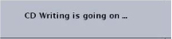
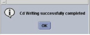
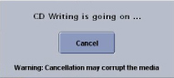
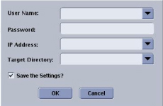

Table 3: Export Tab Details
| No. | Selection | Description |
|---|---|---|
| 1 | Report Name list | The list of all the report names in the data base. |
| 2 |  | Highlight an item in any of the list displays (Report, Folder, or Type) and click the Delete icon to remove the item from the list. Items remain on the list after you Quit Data Export until they have been deleted through this method. |
| 3 | Folder Name list | This list identifies all the folders associated with the report name. Note the file size to make sure you can ftp the file or store it on a single CD-R. |
| 4 | Move to | The Move to selection allows you to move the currently highlighted item to a destination of your choice. For example, you can highlight an item in the Type list and add it to a particular folder in the Folder list. The size of the data that comprises each folder is listed. |
| 5 | Type Name list | The list of all the file types within the highlighted folder. Keep in mind, that the only items displayed in the list are the item types. If, for example, you added 20 T1 JPEG images to Folder 1 and then added another 20 T2 JPEG images to Folder 1, the number of JPEGs in folder 1 is 40. The quantity and size of each data type is listed. |
| 6 | Quit | Click [Quit] to close the window. |
| 7 | Report Name | The name of the report that you are going to export. Select the report from the pull-down menu. |
| 8 | Comment | Type in a comment that appears on the report. Do not apply a carriage return when typing. The text will wrap automatically when appropriate for the finished report. |
| 9 | Conversion Formats | Click one of the radio buttons to determine the file type. Typically select HTML. |
| 10 | Media Label | Click in the type-in field and enter a name for the CD. |
| 11 | Create CD | Click [Create CD] to start burning the report
to the CD-R that is currently in your system’s CD/DVD drive. Once the
write process is active the following prompt appears.  When the system has successfully written the CD, the following prompt appears.  Click Cancel if you chose to stop burning the CD before all data is written to the CD. Note that this action may corrupt the media and you may need to insert another CD and start again.  |
| Send FTP | Click [Send FTP] to open the ftp window.  Enter information for all the fields. The User Name, Password, and IP Address are for the FTP destination site. Selecting Save the Settings only saves the Target Directory information. There must be a target directory at the IP address to successfully transfer files |